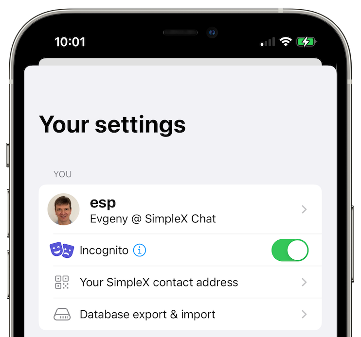

SimpleX Chat v3.2 is released
Published: Sep 1, 2022
What's new
- Incognito mode
- assign names to your contacts
- use .onion server addresses with Tor
- endless scrolling and search in chats
- choose accent color and dark mode
- disable notifications per contact / group
- on Android:
- swipe to reply
- reduced APK size for direct download and in F-Droid repo from 200 to 50Mb!
Implementation audit is arranged for October!
Incognito mode
 

SimpleX is already private, so why do we need an incognito mode, you may ask.
You indeed can choose a pseudonym as your main profile name, but there are several problems:
- many users want to have their real name as their main profile, so that their friends recognise them. SimpleX objective is to provide anonymity from the network operators, but not necessarily from your contacts.
- even if you choose a pseudonym, it would be used for all your contacts. And if two of them meet, while they cannot prove they are talking to the same person, as they use different addresses in SimpleX network to send you the messages, they could suspect it.
- any pseudonym you manually choose leaks some information about you, as it's not really random.
You could also use multiple chat profiles - currently you can only switch between them via export/import, we will make it easier very soon! But there are problems with multiple profiles too:
- if you make many anonymous connections, each in its own user profile, you would end up having too many profiles - it is very inconvenient to manage.
- sometimes, as your relationship with your contact evolves, you may want to share your main profile with them and have them among your friends - multiple profiles don't make it possible.
So, the new Incognito mode allows having a new random name shared with each new contact, while having them all in the same user profile, and without the hassle of managing it manually. It's like a private mode in the browsers, where you can temporarily enable it when you connect to somebody you don't trust, and then disable it when connecting to the friend who knows you. It can be turned on via the app settings - see the pictures.
I don't know any other messenger with this feature, and I always wanted to have this mode, so we are really looking forward to your feedback about it!
Assign names to your contacts
You can now change the name under which your contacts appear in the chats. This is particularly useful when somebody connected to you using a random name – you can change it to be related to the context of the connection.
Using .onion server addresses with Tor


We have released support for using SOCKS proxy to access messaging servers via Tor, but previously the servers were still available via their public Internet addresses. It means that while your IP address was protected from the server, the whole Tor circuit could have been observed by some actors, and for some communication scenarios it is not desirable.
This release adds support for servers with multiple hostnames - all servers provided by SimpleX Chat now have dual addresses (one public and one .onion), and you can have your own servers available via two addresses as well - all you have to do is to install Tor client on your server and register its address with Tor. If you server has both public and .onion address, it is not really hidden, so you should enable HiddenServiceSingleHopMode to reduce the latency of connection - it protects anonymity of the people who connect to the server, but not of the server itself. The server address would include both its public and onion address, as you can see in the server addresses in the app (in the contacts pages) - you should use the same format for the addresses of your servers.
Both android and iOS app allow managing whether .onion addresses are used, and you can also enforce using .onion addresses - in this case the app will not connect to the server unless one of its hostname is .onion address. On Android, .onion addresses are used by default when SOCKS proxy is enabled.
Endless scrolling and search in chats
Now you can access the full chat history via the app - it's embarrassing how long it took us to add it! And you can search the messages as well.
Choose accent color and dark mode
Many of you said that blue is the worst possible color, so you can now make the app buttons and links look like you want! My favourite colours are green and orange.
And you can choose dark or light mode independently of the system settings.
SimpleX platform
Some links to answer the most common questions:
How can SimpleX deliver messages without user identifiers.
What are the risks to have identifiers assigned to the users.
Technical details and limitations.
How SimpleX is different from Session, Matrix, Signal, etc..
We ask you to help us pay for 3rd party security audit
Our great news is that we have already signed the agreement and paid for the security audit!
It is planned in October, and if there are no major issues we will publish this report straight away, otherwise - once we fix them.
This is a major expense for use - over $20,000 - I would really appreciate if you could help us cover some part of this cost with the donations.
Our promise to our users is that SimpleX protocols are and will remain open, and in public domain, - so anybody can build the future implementations of the clients and the servers. We will be establishing a legal framework this year to ensure that it doesn't change if the ownership of SimpleX Chat Ltd changes at any future point.
Please consider making a donation - it will help us to raise more funds. Donating any amount, even the price of the cup of coffee, would make a huge difference for us.
It is possible to donate via:
- GitHub: it is commission-free for us.
- OpenCollective: it also accepts donations in crypto-currencies, but charges a commission.
- Monero wallet: 8568eeVjaJ1RQ65ZUn9PRQ8ENtqeX9VVhcCYYhnVLxhV4JtBqw42so2VEUDQZNkFfsH5sXCuV7FN8VhRQ21DkNibTZP57Qt
Thank you,
Evgeny
SimpleX Chat founder